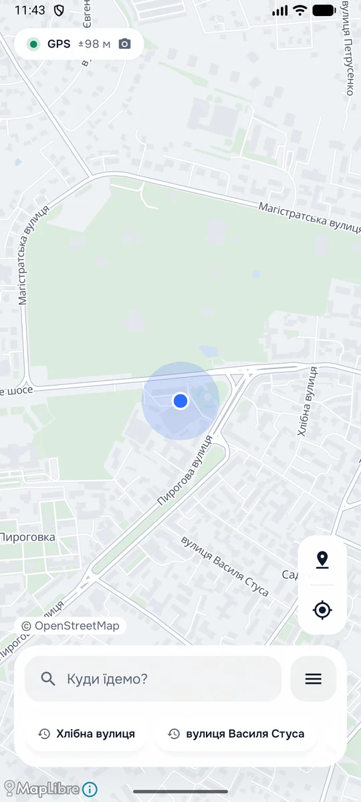
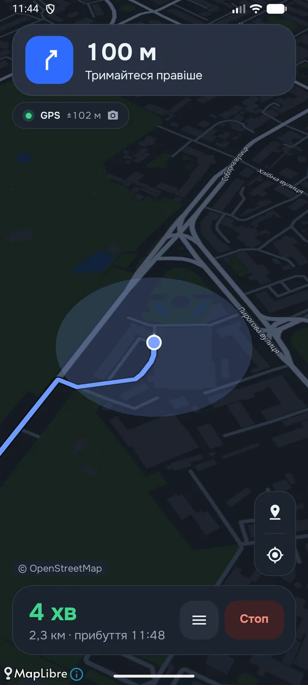
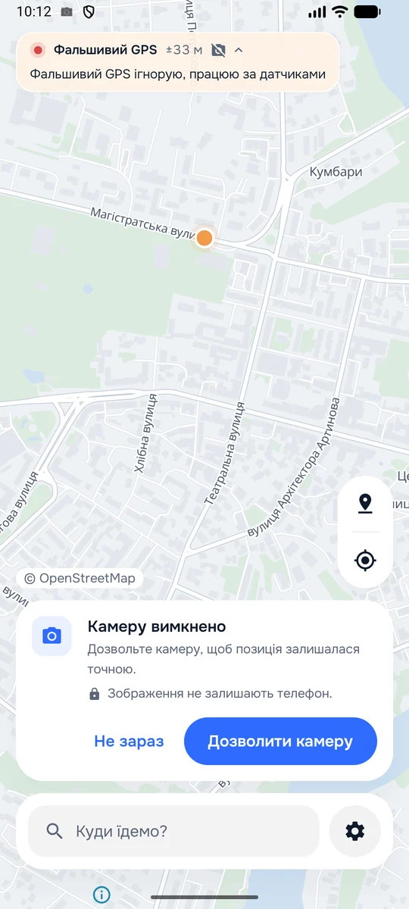
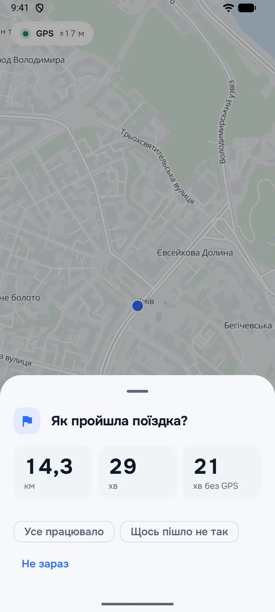
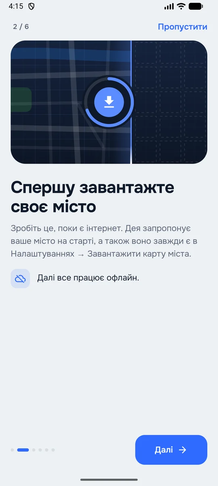
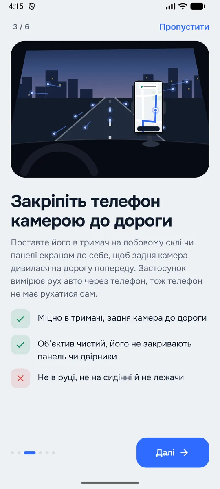
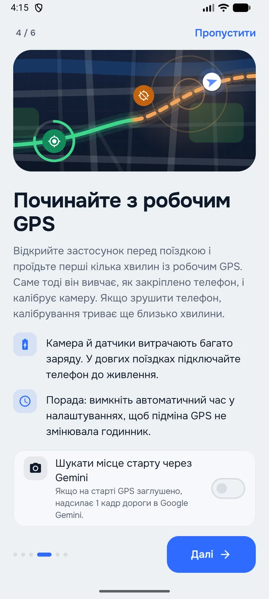
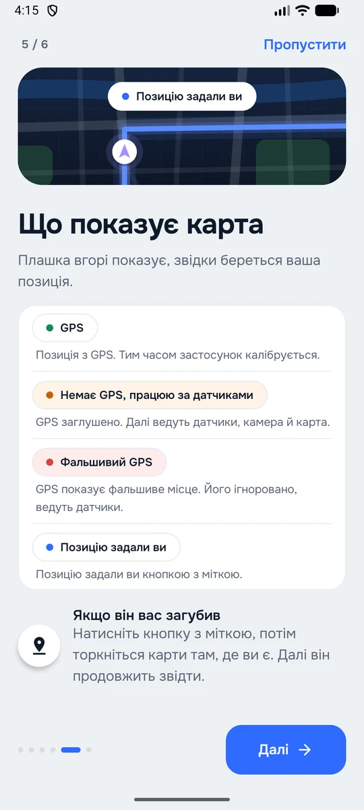

01 / Датчики
Датчики руху
Гіроскоп і акселерометр телефона відстежують кожен поворот, розгін і зупинку.
Дея — безкоштовний офлайн-навігатор для Android. Коли GPS глушать або підмінюють, вона веде вас далі за датчиками телефона, задньою камерою та картою вашого міста.
Немає Google Play? Завантажте APK
Запис екрана · 12 с
01 Як це працює
Звичайний навігатор сліпне, щойно GPS зникає або показує, що ви в аеропорту. Дея продовжує вести вас, бо знає, як рухається авто і якими дорогами воно може їхати.
Гіроскоп і акселерометр телефона відстежують кожен поворот, розгін і зупинку.
Дивиться на дорогу попереду й вимірює швидкість. Кадри аналізуються в пам’яті та одразу зникають. Без камери Дея теж працює, лише точність може бути нижчою.
Дороги з OpenStreetMap лежать на телефоні. Позиція завжди «прилипає» до справжньої дороги.
Маєте OBD-адаптер? Вставте його в роз’єм OBD під панеллю, у налаштуваннях Деї натисніть «Підключити OBD-адаптер», і вона зчитуватиме швидкість самого авто. Це найточніше джерело: зупинка завжди рівно 0 км/год, а камера тоді не вмикається взагалі.
Плашка вгорі екрана показує, звідки позиція
GPS у нормі. Дея веде за ним і тим часом калібрує датчики та камеру.
СупутникиСигнал заглушено. Далі ведуть датчики, камера й карта.
Датчики · камера · картаGPS показує чуже місце. Дея помічає підміну й не дає їй збити вас з маршруту.
Датчики · камера · карта02 Екрани
Справжні знімки екрана застосунку, без макетів. Карти © OpenStreetMap.

Карта
Вулиці, пошук і нещодавні місця просто на телефоні. Зелена плашка: GPS у нормі.

Навігація
Маршрут, відстань до маневру й час прибуття. Коло показує, наскільки Дея певна позиції.

Підміна GPS
Коли GPS раптом «переносить» вас деінде, Дея це помічає й веде далі за датчиками.

Після поїздки
Підсумок поїздки: скільки проїхали і скільки з того Дея вела вас без супутників.
03 Перша поїздка
Знадобиться тримач для телефона на лобовому склі або панелі. Інтернет потрібен лише один раз, щоб завантажити карту.

Крок 01
Поки є інтернет. Після цього все працює офлайн.

Крок 02
У тримачі, екраном до себе, щоб задня камера дивилася на дорогу.

Крок 03
За першу хвилину-дві Дея калібрує камеру й датчики під ваше авто.

Крок 04
Плашка вгорі завжди показує, звідки береться ваша позиція.
04 Відео
Хмара з тисяч можливих позицій, кожна на справжній дорозі. Що далі ви їдете, то точніше Дея знає, де ви.
Пояснення · 34 сКарти © OpenStreetMap
05 Приватність
Камера дивиться на дорогу, а не в інтернет.
06 Питання
Так. Підійде звичайний адаптер ELM327 з Bluetooth або Bluetooth LE (Vgate, Vlinker, Veepeak, недорогі «OBD2»). Звичайний Bluetooth-адаптер спершу сполучіть у налаштуваннях телефона (PIN зазвичай 1234), BLE-адаптер Дея знайде сама. Дозвіл «Пристрої поблизу» Дея попросить лише тоді, коли ви натиснете «Підключити OBD-адаптер». З авто зчитується тільки швидкість.
Лише щоб завантажити карту свого міста (та за бажанням уточнити коло старту через Gemini, якщо ви самі ввімкнули цю опцію). Далі Дея визначає місце й прокладає маршрут повністю офлайн.
Смартфон на Android 8.0 або новішому, з задньою камерою, гіроскопом і акселерометром. Майже всі сучасні телефони мають їх.
У місті, де багато поворотів, Дея зазвичай тримає вас на правильній вулиці. На довгих прямих дорогах без поворотів похибка поступово росте, а щойно з’являється поворот чи справжній GPS, позиція знову уточнюється. Якщо Дея загубилася, торкніться кнопки з міткою й покажіть на карті, де ви.
Дея бере приблизне місце від Wi-Fi чи мобільної мережі, а далі впізнає, де ви, за формою шляху: повороти, які ви проїхали, порівнюються з вулицями карти. Зазвичай за 300–600 метрів їзди стрілка стає на правильну вулицю. Швидше за все працює, якщо ввімкнено камеру.
Камера й датчики працюють увесь час поїздки, тож у довгих поїздках краще тримати телефон на зарядці.
Від мему з вівцею, яка питає «Де я?». Тепер у неї є відповідь.
06 Завантажити
Найпростіше — з Google Play: так Дея оновлюватиметься сама. Безкоштовно.
Немає Google Play? Завантажте APK
Розкажіть, як Дея впоралася у вашому місті, що заважає й чого бракує. Читаємо все.